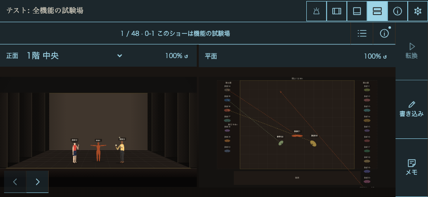
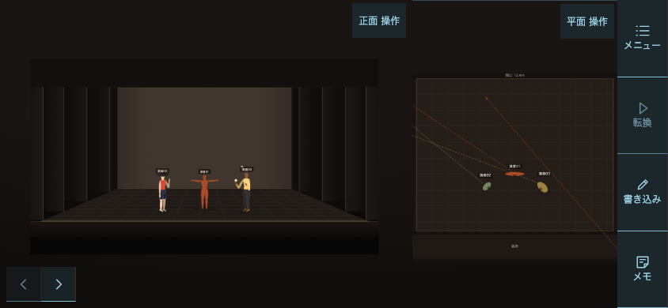
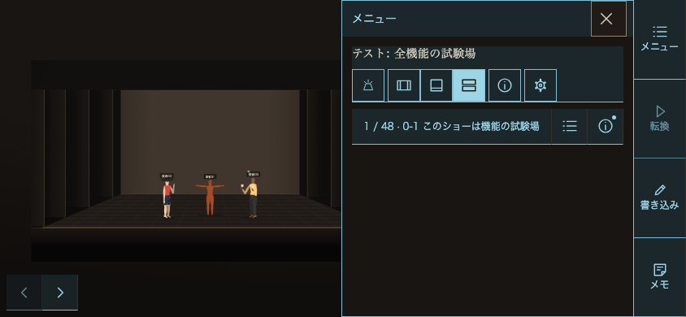
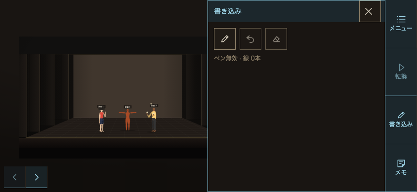

ローカル検証記録。次に確認する点は、実機での正面図の読みやすさと右メニューの押しやすさです。公開・commit・pushはしていません。
横844×390：正面図の表示枠 258 → 390px。平面図は257 → 389px。横「両方」は正面2：平面1。縦390×844の配置は維持しています。


ショー名・場面名・表示切替・照明・情報・設定は右レールのメニュー内。図の階選択とリセットは図右上の開閉操作に残しました。

舞台外接の表示幅と表示高を、表示枠の幅と高さで割った大きい方。新100%は80%、平面の通常120%は96%。舞台寸法は描画本体の会場サイズ＋project.venueDimsです。正面は開口（奥壁上端〜床前端）、平面は演技エリアの外接を測っています。全3見本でフォールバックなし。
| 見本・場面1 | 向き | 図 | 舞台 px | 表示枠 px | 占有率 | 証跡 |
|---|---|---|---|---|---|---|
| romeo-juliet | landscape | front | 624.00 × 261.38 | 780 × 390 | 80.00% | 画像 |
| romeo-juliet | landscape | plan | 416.00 × 312.00 | 780 × 390 | 80.00% | 画像 |
| romeo-juliet | portrait | front | 312.00 × 130.69 | 390 × 403 | 80.00% | 画像 |
| romeo-juliet | portrait | plan | 312.00 × 234.00 | 390 × 403 | 80.00% | 画像 |
| feature-test | landscape | front | 624.00 × 254.96 | 780 × 390 | 80.00% | 画像 |
| feature-test | landscape | plan | 403.00 × 312.00 | 780 × 390 | 80.00% | 画像 |
| feature-test | portrait | front | 312.00 × 127.48 | 390 × 403 | 80.00% | 画像 |
| feature-test | portrait | plan | 312.00 × 241.55 | 390 × 403 | 80.00% | 画像 |
| four-outlines | landscape | front | 474.31 × 312.00 | 780 × 390 | 80.00% | 画像 |
| four-outlines | landscape | plan | 490.28 × 312.00 | 780 × 390 | 80.00% | 画像 |
| four-outlines | portrait | front | 312.00 × 205.23 | 390 × 591 | 80.00% | 画像 |
| four-outlines | portrait | plan | 312.00 × 198.55 | 390 × 591 | 80.00% | 画像 |
「メモ用紙」は図上付箋と解釈。操作・編集・保存経路を取り除き、既存付箋データは保持して表示専用にしました。ペン・1本戻す・線を消す・自分用テキストメモは残っています。

ChromiumのhasTouch/isMobileを有効化。3見本×縦横、照明切替、中央モーダル、縦の詳細自動表示、回転時の表示引継ぎ、階選択、ピンチとリセット、自分用メモ保存を確認。コンソールエラー0。実機Safari/Androidは未確認です。
全計測JSON · 前後比較JSON · 既存付箋保持・ペン・照明復元 · 変更ファイルとγへの移植手順 · プレビュー入口（HTTP配信が必要）
起動：プレビューのルートで python3 -m http.server 8981 --bind 127.0.0.1